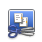
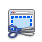
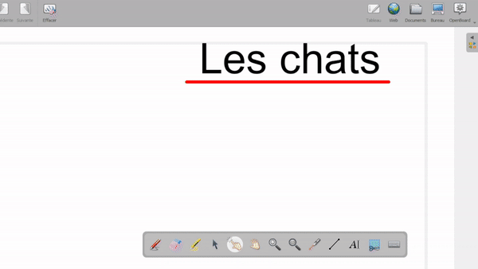

In Modalità Lavagna
Cerca nella palette dello stilo, cliccaci sopra e seleziona l'area da catturare. Successivamente, avrai tre opzioni :
- Aggiungi alla pagina corrente
- Aggiungi in una nuova pagina
- Aggiungi alla libreria (aggiunge la cattura alla cartella Immagini, in modo da poterla riutilizzare in qualsiasi momento)
Ecco un esempio di tutto il processo :

 Non devi preoccuparti della palette dello stilo, della vista delle miniature della lavagna o della libreria di OpenBoard, non verranno catturati dal tuo lasso!
Non devi preoccuparti della palette dello stilo, della vista delle miniature della lavagna o della libreria di OpenBoard, non verranno catturati dal tuo lasso!
In Modalità Desktop
Puoi fare la stessa cosa anche in Modalità Desktop per catturare il tuo lavoro su altri software. Vai in Modalità Desktop cliccando su 
Troverai due icone :  per catturare l'intero schermo e  per catturare solo una parte. Come in Modalità Lavagna, dovrai scegliere dove posizionare la cattura effettuata
Ecco un'illustrazione di tutto il processo

In Modalità Web
Di nuovo, lo stesso processo è disponibile in Modalità Web, dove sarai in grado di catturare solo una parte dello schermo o catturare la scheda corrente con